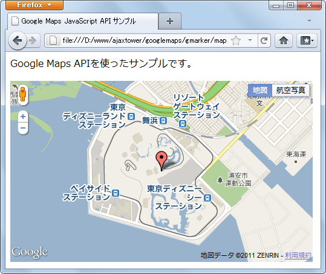

マーカーの作成
地図上に目印をつける目的で使用されるのがマーカーです。実際は次のような形で地図上で表示されます。

ではまずマーカーを表すMarkerクラスのオブジェクトを作成します。コンストラクタ関数は次のように定義されています。
Marker(opts?:MarkerOptions)
指定されたオプションを使用してマーカーを作成します。地図が指定されている場合、構 築するときに地図にマーカーが追加されます。マーカーを表示するためには位置を設定し ておく必要があることに注意してください。
オプションである1番目の引数にはマーカーを表示する対象となる地図や座標などを設定するために使用するMarkerOptionsオブジェクトを指定します。引数を省略した場合は用意されているメソッドなどを使って設定して下さい。
マーカーの場合、MarkerOptionsオブジェクトの「map」プロパティに値を指定してMarkerオブジェクトを作成すると、作成した時点で地図(またはストリートビュー)にマーカーが表示されます。
実際には次のように記述します。
var marker1 = new google.maps.Marker();
var latlng = new google.maps.LatLng(35.539001,134.228468);
var marker2 = new google.maps.Marker({
position: latlng
});
1つ目は引数を省略したもの。2つ目はMarkerOptionsオブジェクトを指定したものです。
MarkerOptionsオブジェクト
マーカーには少なくとも座標を指定する必要があります。また地図上に表示するには対象となる地図かストリートビューを指定する必要があります。
このようなマーカーに必要な設定を記述するために使用するのがMarkerOptionsオブジェクトです。このオブジェクトには次のようなパラメータが定義されています。
| プロパティ | タイプ | 説明 |
|---|---|---|
| clickable | boolean | true の場合、マーカーはマウス イベントとタッチ イベントを受け取ります。デフォルト値は true です。 |
| cursor | string | マウスオーバー時に表示されるマウスのカーソル。 |
| draggable | boolean | true の場合、マーカーをドラッグすることができます。デフォルト値は false です。 |
| flat | boolean | true の場合、マーカーの影は表示されません。 |
| icon | string|MarkerImage | 前面のアイコン。 |
| map | Map|StreetViewPanorama | マーカーを表示する地図。 |
| position | LatLng | マーカーの位置。必須です。 |
| shadow | string|MarkerImage | 影の画像 |
| shape | MarkerShape | ドラッグ/クリック用の画像マップの領域定義。 |
| title | string | ロールオーバー テキスト |
| visible | boolean | true の場合、マーカーが表示されます。 |
| zIndex | number | 地図上のすべてのマーカーが zIndex 順に表示され、高い値のマーカーは低い値のマーカーより前に表示されます。デフォルトでは、マーカーは緯度に従って表示され、低い緯度のマーカーが高い緯度のマーカーより前に表示されます。 |
「position」プロパティは必須です。マーカーを表示する座標を指定して下さい。
実際には次のようにオブジェクトを作成します。
var latlng = new google.maps.LatLng(35.539001,134.228468);
var mopts = {
position: latlng,
map: map
};
作成したオブジェクトリテラルを引数に指定してMarkerクラスのオブジェクトを作成します。
var latlng = new google.maps.LatLng(35.539001,134.228468);
var mopts = {
position: latlng,
map: map
};
var marker = new google.maps.Marker(mopts);
まとめて次のように書いても同じです。
var latlng = new google.maps.LatLng(35.539001,134.228468);
var marker = new google.maps.Marker({
position: latlng,
map: map
});
これで座標が指定されたマーカーが作成されました。「map」プロパティも指定されているので作成と同時に地図上に表示されます。
MarkerOptionsオブジェクトの再設定
Markerクラスのオブジェクトを作成する時にMarkerOptionsオブジェクトを指定しましたが、Markerクラスのオブジェクトを作成した後で、改めて別のMarkerOptionsオブジェクトを設定することもできます。
再度設定を行うにはMarkerクラスで用意されている「setOptions」メソッドを使います。
setOptions(options:MarkerOptions)
--
引数に再設定したいMarkerOptionsオブジェクトを指定して下さい。実際には次のように使用します。
var latlng = new google.maps.LatLng(35.539001,134.228468);
var mopts1 = {
position: latlng
};
var marker = new google.maps.Marker(mopts1);
var mopts2 = {
title: 'home',
};
marker.setOptions(mopts2);
マーカーを作成し地図に表示させるプロセスについては次のページでもう一度確認します。
サンプルコード
では実際に試してみます。
function initialize() {
var latlng = new google.maps.LatLng(35.630442,139.882951);
var opts = {
zoom: 14,
center: latlng,
mapTypeId: google.maps.MapTypeId.ROADMAP
};
var map = new google.maps.Map(document.getElementById("map_canvas"), opts);
var m_latlng1 = new google.maps.LatLng(35.632605,139.88132);
var marker1 = new google.maps.Marker({
position: m_latlng1,
map: map
});
var m_latlng2 = new google.maps.LatLng(35.625663,139.884238);
var marker2 = new google.maps.Marker({
position: m_latlng2,
map: map
});
}
<!DOCTYPE html "-//W3C//DTD XHTML 1.0 Strict//EN"
"http://www.w3.org/TR/xhtml1/DTD/xhtml1-strict.dtd">
<html xmlns="http://www.w3.org/1999/xhtml">
<head>
<meta http-equiv="content-type" content="text/html; charset=utf-8"/>
<title>Google Maps JavaScript API サンプル</title>
<script type="text/javascript"
src="http://maps.google.com/maps/api/js?sensor=false"></script>
<script src="./js/code1_1.js" type="text/javascript"></script>
</head>
<body onload="initialize()">
<p>Google Maps APIを使ったサンプルです。</p>
<div id="map_canvas" style="width:500px; height:300px"></div>
</body>
</html>
ブラウザで上記ページを開くと次のように表示されます。
2つのマーカーを表示しました。情報ウィンドウとは異なり、マーカーを表示しても自動で地図の中心が移動するようなことはありません。
( Written by Tatsuo Ikura )

著者 / TATSUO IKURA
初心者～中級者の方を対象としたプログラミング方法や開発環境の構築の解説を行うサイトの運営を行っています。